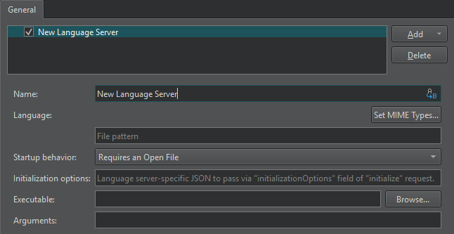

Add generic language servers
To add a generic StdIO language server:
- Go to Preferences > Language Client > Add > Generic StdIO Language Server to add a generic language server.

- In the Name field, enter a name for the language server. Select the (Variables) button to use a variable for the server name. For more information, see Use Qt Creator variables.
- In the Language field, select Set MIME Types to select the MIME types of the files to send to the language server. In the field below, you can enter file patterns to extend the MIME types, separated by semicolons.
- In the Startup behavior field, select whether the language server is started when Qt Creator starts or when a project or file with a matching MIME type is opened. General Messages displays information about the connection to the language server.
- In the Initialization options field, you can add language server specific JSON attributes to pass to an
initializerequest. - In the Executable field, enter the path to the language server executable.
- In the Arguments field, enter any required command-line arguments. Select Variables to use variables as arguments.
See also How To: Manage Language Servers and Language Servers.